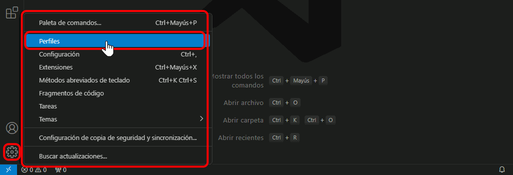
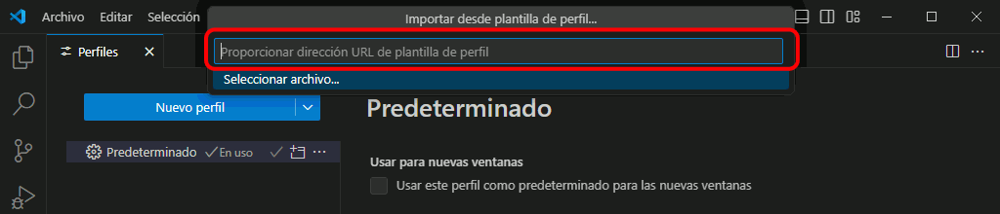
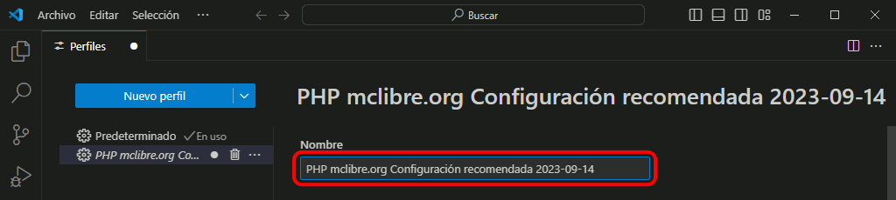

Importar el perfil recomendado
La URL del perfil recomendado para seguir estos apuntes en Windows es: https://gist.github.com/BartolomeSintes/b2ad1d8c4e87bf8015c5c136a095134f
Una vez importado este perfil en Visual Studio Code, se requieren un par de ajustes adicionales que se comentan en los apartados siguientes.
Para importar el perfil de Visual Studio Code recomendado para este curso ...
- Haga clic en la rueda dentada y elija la opción :

- Se abrirá una caja de texto para escribir la URL del perfil compartido:

- La URL del perfil recomendado para seguir estos apuntes en Windows es: https://gist.github.com/BartolomeSintes/b2ad1d8c4e87bf8015c5c136a095134f
- Copie y pegue el enlace en la caja de texto y pulse Intro:

- Se mostrará la lista de elementos incluidos en el perfil (que se pueden seleccionar de forma individual). Para importar los elementos sleeccionados, haga clic en el botón "Crear perfil":

- Se mostrará una caja de texto con el nombre del perfil:
- Ese nombre se puede cambiar, por ejemplo, por un nombre más corto. Es aconsejable que el nombre de cada perfil empiece de forma distinta (el motivo se explica en la captura siguiente). Para terminar, haga clic en el botón "Crear".
- Una vez creado el perfil, Visual Studio se reiniciará cargando el perfil. El nombre del perfil activo se muestra en la parte superior de la ventana. El icono de la rueda dentada muestra también un par de caracteres que correponden al principio del nombre del perfil. Si los nombres de perfiles empiezan de forma distinta, de un vistazo se puede identificar el perfil que se está utilizando.

- El perfil importado se mostrará en el menu de la rueda dentada.

Una vez importado este perfil en Visual Studio Code, se requieren un par de ajustes adicionales que se comentan en los apartados siguientes.